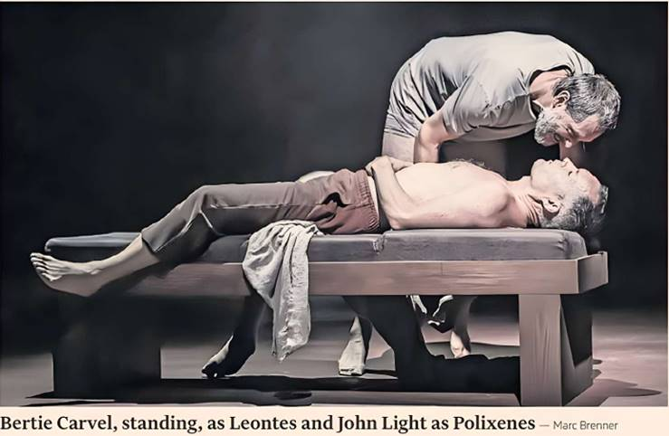

Of all Shakespeare’s plays, The Winter’s Tale owes most to folklore and myth. Like the Greek goddess Persephone, the lost girl Perdita is torn from her mother’s arms as winter descends, only to return in fertile summer. In Shakespeare’s version, this reunion takes not six months but 16 years, and the disruptive force is not an unwanted husband but a violent father.
Yaël Farber’s production is attuned to these mythic underpinnings, bringing a moody symbolism familiar from her recent Almeida Theatre productions of Macbeth and King Lear. But against its implausible fairytale twists, any Winter’s Tale depends on the psychological credibility of King Leontes’ first-act breakdown, as uncontrollable sexual jealousy leads him to denounce his blameless wife Hermione and reject their newborn daughter. In Bertie Carvel, Farber has a star with the necessary weighty realism.
Pathetic and helpless in his imagined cuckoldry, this Leontes giggles like a child at his own cleverness, unreachable within the conspiracies he has woven. Machismo lets him reclaim control. Perhaps it masks other insecurities. Leontes imagines ally King Polixenes taking his place in his bed: but it is only of his friend’s body that he dreams; Madeline Appiah’s Hermione is nowhere in sight. Earlier we have watched these men lovingly wrestle skin to skin, like graceful dancers.
Some may find Farber’s classical allusions too opaque, or miss the raucous comedy that other directors inject into the scenes of Perdita’s rural adolescence, after she has been adopted by bumpkins. But Farber never loses the thread of a narrative that feels all too contemporary — Carvel’s Leontes would surely be an admirer of Andrew Tate — and it leads to an unforgettable tableau of family rupture and reconciliation.
Farber fuses the role of the hustler Autolycus with the allegorical figure of Father Time, the play’s original narrator. It suits a production that favours menace over joviality. Circling the stage, Trevor Fox is a sardonic presence, his Victorian black garb and shovel making him more gravedigger than jester, although he quotes Guy Lombardo lyrics alongside chunks of Brecht. A fiddle player, cellist and accordionist fly in and out like refugees from a Chagall painting.
Soutra Gilmour’s designs reflect the play’s concern with climatic shifts. A sphere depicting planet Earth hovers over the stage as we take our seats, its surface later transforming into icy moons and blazing suns. Perdita’s coming of age is not so much a festival of fertility as of fire, danced under an angry red planet.
Polixenes disrupts this feast, furious to discover his own son Prince Florizel secretly courting the humbly reared Perdita. John Light as Polixenes carries a coil of barely contained threat, reminding us that misogynistic violence is not confined to Leontes’ court.
This warfare between men and women is fundamental to Farber’s vision of the play. Where lone men rupture the social fabric, women heal it. Both Hermione and Perdita are surrounded by a protective sisterhood of the same female attendants, choreographed like swans.
The strongest force of all is Aïcha Kossoko as Paulina, the woman who verbally cudgels Leontes into penance. An outsider in this court, as indicated by her French West African accent, she has never seemed more implacable and battle-scarred. Farber’s decision to change Perdita’s adoptive father to a mother underlines this approach. Polixenes, in an adapted line, calls her a “witch”. The transcendent scene of reconciliation, however worth the trip alone, is pure Shakespeare.
To August 30, rsc.org.uk